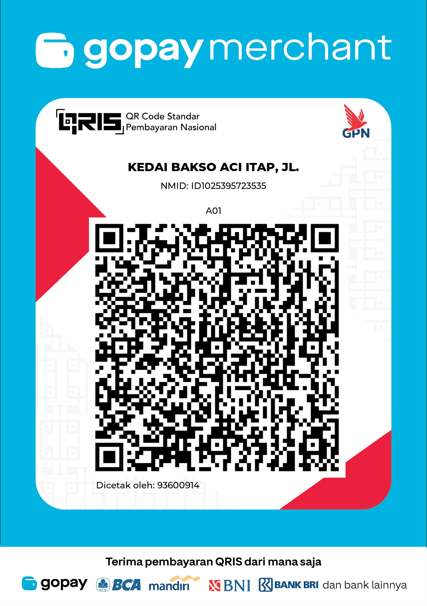
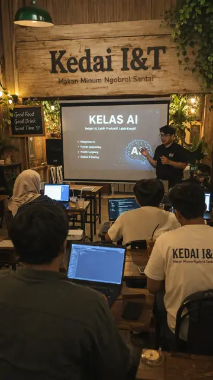
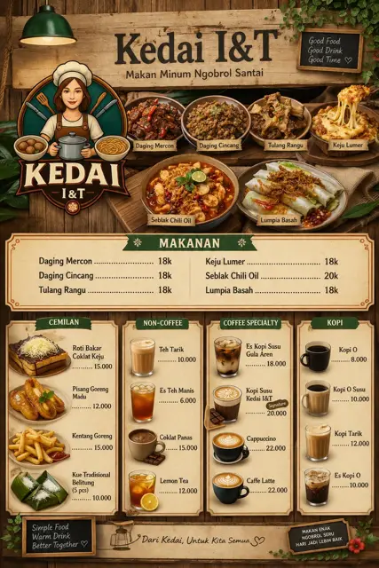

Cuaca, wisata, rasa, dan cerita.
Terbaru
Memuat kabar…
Lowongan
Memuat lowongan…
Belanja
Pasang di HP
Dari browser bukan file APK. Tombol Pasang hanya muncul di Chrome yang mendukung. iPhone: Bagikan, lalu Tambahkan ke Layar Utama.
APK uji . Berkas sungguhan, tanda tangan uji, hanya membuka itapbelitung.my.id.
Detail file
SHA-256
Belanja & Kelas
Harga dan tujuan bayar tetap di sini. Lynk, QRIS, dan WhatsApp butuh internet, tidak diproses offline.
🚀 Jasa Digital iTAP
🌐 Jasa Website UMKM
Landing page Rp350rb · Toko/katalog Rp750rb · Maintenance Rp50rb/bln.
Lihat paket🤖 Jasa Chatbot WhatsApp
Auto-balas & terima pesanan 24 jam. Mulai Rp300rb + Rp100rb/bln.
Lihat paket📣 Slot iklan tersedia — pasang di sini
Promosikan usaha Belitung kamu mulai Rp50rb/minggu →
Produk digital & jasa video AI
Pembelian lewat Lynk, QRIS, dan WhatsApp butuh internet. Tidak ada pembayaran yang diproses offline.
🎁 Paket Kreator AI
AI Prompt Pack + 100 Prompt Sinematik AI dalam 1 paket. Bayar QRIS, PDF dikirim via WA.
Rp71.000 Rp59rb Hemat Rp12rb
✅ PDF terkirim otomatis setelah bayar
🎬 iTAP Epic Video Generator
Bikin prompt video epik tinggal klik: 6 scene × 10 dtk, prompt visual EN untuk Veo/Grok Imagine/Kling, narasi Indonesia utuh, musik & SFX, subtitle SRT. Bisa dipasang di HP. Baru: mode Affiliate & jualan (TikTok Shop/Shopee/UMKM) — hook, demo produk, CTA keranjang kuning & disclosure otomatis.
Rp99.000 Rp49.000 Lifetime
ℹ️ Naskah & prompt gratis pakai AI. Generate gambar butuh API key Gemini sendiri dengan billing aktif (±Rp550/gambar, ditanggung pembeli).
Coba demo gratis Beli via WABayar via QRIS

NMID: ID1025395723535
- Scan QRIS di atas (GoPay, OVO, DANA, m-banking, dll) dan bayar Rp49.000.
- Kirim bukti bayar via WhatsApp ke 0851-4112-1283.
- Kode akses FULL dikirim admin via WA setelah pembayaran dicek.
🧾 iTAP Kasir (AI)
Kasir di HP untuk warung & kedai: foto barang, AI isi keranjang. Stok, kulakan, opname, laba & struk WA tercatat otomatis. Data tersimpan di HP sendiri.
Rp79.000 Rp49rb/bln Tahunan Rp399rb
📦 iTAP AI Prompt Pack
PDF 13 hlm: formula video sinematik 6 scene, 30 prompt siap pakai, character sheet wajah konsisten, thumbnail & template caption.
Rp49.000 Rp35rb -29%

Jasa Video AI Sinematik
Kelas Kreator Video AI
Pilih tingkat: Modul PDF belajar sendiri (file langsung terkirim) · K1 kursus video + PDF · K2 kursus + mentoring 30 hari.
📝 Pre-registrasi: pendaftaran dibuka, jadwal dikonfirmasi via WhatsApp. Materi rilis bertahap.
📘 Modul Kreator AI (PDF)
Belajar sendiri, modul PDF 10 bab: naskah, prompt, Grok Imagine → CapCut, VO, upload & monetisasi. File langsung terkirim via Lynk.
Rp129.000 Rp79.000
Kreator Video AI Lokal — dari Nol sampai Viral
Kursus video 5–12 menit per materi + PDF + template. Total ±2–3 jam.
Rp199.000 Rp149.000
Lihat materi
- 0. Pembuka — cara belajar, contoh hasil, setup akun
- 1. Mindset Kreator Niche Lokal
- 2. Riset & Naskah — rumus naskah 60 detik
- 3. Prompt Gambar & Video — gaya sinematik
- 4. Voice Over — VO AI / suara sendiri
- 5. Editing CapCut — musik, subtitle, export
- 6. Posting & Growth — hook, caption, analytics
- 7. Cuan dari Skill Ini — jual jasa, harga, klien UMKM
- Bonus: Ebook E1, template naskah, checklist
Kursus + Mentoring 30 Hari
Rp349.000
Lihat materi
- Semua isi K1
- Grup WhatsApp batch (max 20 orang)
- 4x sesi live/Zoom mingguan (Q&A + bedah video peserta)
- Review 2 video per peserta
📰 Berita Belitung
Memuat…
Judul & tautan dari Belitong Ekspres, ANTARA Babel, Pos Belitung, Bangka Pos, Babel Pos & Google Berita. Klik untuk baca di situs aslinya.
💼 Lowongan Kerja Belitung
Memuat…
⚠️ Selalu cek keaslian lowongan, jangan bayar apa pun untuk melamar.
Dihimpun otomatis tiap hari dari Glints, Loker.id & Google Berita (30 hari terakhir). Klik untuk melamar di situs aslinya.
Cuaca, gelombang & matahari
Dari BMKG, bukan peringatan khusus Belitung
Memuat gempa terbaru dari BMKG…
Sumber: BMKG (data.bmkg.go.id, gempa terbaru). Angka ini berubah mengikuti BMKG, dan lokasinya sering di luar Belitung.
Tanjung Pandan
Belitung & Belitung Timur
Nomor kabupaten
Kab. Belitung (Tanjung Pandan)
Kab. Belitung Timur (Manggar)
Cadangan nasional: 112 (darurat), 110 (polisi), 115 (SAR). Terakhir dicek 20 Okt 2026 · sumber
Kurs, IHSG & Emas
Memuat…
Tabel kurs beli/jual
Kurs Rupiah (beli / jual)
| Mata uang | e-Rate beli | e-Rate jual | Bank Notes beli | Bank Notes jual |
|---|
Bukan saran investasi. IHSG tertunda (bukan real-time). Cek ulang ke bank/pialang sebelum transaksi.
Data Belitung
Pengetahuan Belitung
📚 Pengetahuan Belitung
- Wilayah Pulau Belitung terdiri dari 2 kabupaten: Belitung (ibu kota Tanjung Pandan) dan Belitung Timur (ibu kota Manggar), bagian dari Provinsi Kepulauan Bangka Belitung.
- Luas Kab. Belitung 2.271 km², Kab. Belitung Timur 2.588 km² (total ±4.859 km²).
- Penduduk Kab. Belitung 192.405 jiwa, Kab. Belitung Timur 132.495 jiwa (total 324.900 jiwa).
- Pemekaran Kab. Belitung Timur dibentuk lewat UU No. 5 Tahun 2003, bupati pertamanya (Pj.) dilantik 24 Mei 2003.
- Sejarah Belitung dikenal sebagai daerah tambang timah sejak masa Hindia Belanda; hingga kini timah dan pariwisata jadi penggerak ekonomi.
- Geopark Belitong ditetapkan sebagai UNESCO Global Geopark pada 2021, dengan lanskap batu granit dan pantai yang khas.
Sumber: Data Kependudukan Semester II 2024, Dinas P3ACSKB Prov. Kep. Babel (luas & penduduk); UU No. 5/2003; UNESCO Global Geoparks. · data per 2024
🛒 Harga pangan harian
Memuat…
Sumber: ADAT Belitung, Diskominfo Kab. Belitung (data Dinas Ketahanan Pangan dan Pertanian Kab. Belitung), Pasar Tanjung Pandan. Diperbarui otomatis tiap hari. · data per hari ini
Wilayah, desa, dan bupati
🗺️ Wilayah: kecamatan & desa
Sumber: Kepmendagri No. 300.2.2-2138 Tahun 2025 (kode wilayah); jumlah penduduk per kecamatan: Data Kependudukan Semester II 2024 (Dukcapil, via Dinas P3ACSKB Prov. Babel). · data per 2025 (wilayah), 2024 (penduduk)
🏛️ Bupati Belitung
🏛️ Bupati Belitung Timur
Pj./Plt./Plh./Pjs. = pejabat sementara, bukan bupati definitif. Sumber: Setda Kab. Belitung, Diskominfo Belitung, ANTARA Babel; dicek silang dengan Wikipedia (Daftar Bupati Belitung / Belitung Timur). Tahun jabatan bupati 1950–1999 hanya tercatat per tahun. · data per Okt 2026
Isi Pulsa, Data, Top Up Game, E-Wallet & Token PLN
Pilih produk, isi nomor/User ID, langsung pesan lewat WhatsApp kedai iTAP. Diproses manual sama admin.
Jelajah Belitung
Buka satu bagian. Isinya tetap lengkap.
Pencarian serba Belitung
Pencarian serba Belitung
Gak ketemu? Cari di Google Cari di Google Maps · perlu dicek = info umum, sebaiknya diverifikasi.
Wisata
Jelajahi Belitung
Kuliner
Rasa Belitung
Sejarah, legenda, dan budaya
Sejarah, legenda & budaya
Cerita video
Cerita Belitung dari iTAP
Tempat ibadah
Rencana trip
Rencana trip Belitung
Sorotan hari ini
Terpopuler dibaca
Memuat…

Kedai Bakso Aci iTAP
Jl. Permata VI, Puri Kirana 3, 33414 Blok H No. 25, Air Merbau, Tanjung Pandan
🕚 Buka setiap hari 11.00–22.00 WIB
📍 Rute ke kedai Pesan di GrabFood Pesan di GoFood
Lihat peta
Jual Beli
Segera hadir. Akun belum dihubungkan, jadi tidak ada iklan yang bisa dikirim.
Kirim kabar
Segera hadir. Draf tidak dikirim sebelum akun terhubung.
Masuk
Segera hadir. Masuk email belum dihubungkan.
Asisten
Asisten belum dipasang. Tanya iTAP lewat WhatsApp.
CCTV publik
Tayangan dari kanal YouTube yang sudah disematkan Portal CCTV Diskominfo Kabupaten Belitung. iTAP tidak menarik siaran HLS dari server kabupaten. Kalau pemutar kosong, kamera sedang mati.
Traffic Light Terminal
Traffic Light Terminal 2
Halte GOR
Simpang DPRD
Sumber: cctv.belitung.go.id, Dinas Komunikasi dan Informatika Kabupaten Belitung. Daftar lengkap dan kamera lain ada di portal itu.